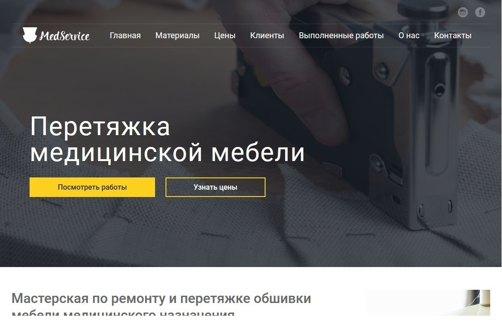

Немного обо мне и о том, что я умею.
Я начинающий frontend-разработчик. Изучением данного направления занимаюсь самостоятельно в свободное время (с перспективой сделать это направление основным) и потому желание обучаться для меня — естественное состояние. И когда удаётся узнать что-то новое и тут же попробовать реализовать — я испытываю настоящий восторг. А как же иначе! Основной поставщик знаний — HTML Academy, за что им огромное спасибо! Ссылочка на профиль HTML Academy.
На данный момент в вёрстке использую HTML5 и CSS3, flexbox и осваиваю grid. Знаком со стратегиями mobile first и responsive design, знаю о Graceful Degradation и Progressive enhancement. Кроссбраузерная, адаптивная/резиновая, семантическая вёрстка для современных браузеров, проходящая валидатор W3, несложные анимации — могу, умею, практикую. Препроцессоры less и sass, js — на уровне «использовал пару раз», продолжаю изучать. Работа с git/github, БЭМ-методология — использую в последних проектах, однако ещё есть куда расти.
Моё резюме можно взять тут.
-
HTML5/CSS3
Действительно полное использование возможностей. Семантические тэги, несложные анимации, флексовая резина, удивительные свойства гридов — вот это вот всё и ещё немножко!
-
Кроссбраузерная, мобильная и валидная вёрстка
Нужно, чтобы страница работала в старом IE7 (или ниже)? Без проблем, сверстаю одинаково выглядящую страницу как на современных технологиях, так и на старых добрых «флоатах» и иже с ними. Адаптировность, резиновость и гибкость — можно всё! Так же уделяю внимание доступности. Валидация кода — обязательно!
-
JS и фреймворки
Умею в «чистый» js на начальном уровне. Из фреймворков — чуть-чуть jquery, вроде слайдеров, меню-гамбургеров и прочих базовых радостей.
Портфолио
-

Сайт-Портфолио
Верстка того самого сайта, на котором вы сейчас находитесь.
Сайт-Портфолио
Собственно, это он — наспех написанный с нуля сайт, на который вы попали скорее всего потому что я отправил вам ссылку)
Со старта было решено использовать частично методологию БЭМ, без структуры построения файлов. Первоначально предполагалось, что все стили напишу в less, однако в итоге пришлось отказаться от этой затеи. Макет для сайта был взят самый базовый из бесплатных и потому многое приходилось «выдумывать» самостоятельно, а каждый раз перегонять less в css, чтобы увидеть результат свёрстанного блока, не хотелось. Использовал принцип Mobile first и немножко Progressive enhancement, т. е. начал с мобильного вида и минимальных технологий, а далее добавлял понемногу стилизацию и увеличение размеров экрана устройства. На данный момент сайт не закончен т. к. делался на скорую руку. В планах ещё много улучшений: улучшить кнопки и ссылки в соответствии со стандартами доступности (и не только кнопки), сделать адекватную замену интерактива на js при его отключении равно как и дописать весь запланированный интерактив на js или jquery (чтобы не было popup на css и прочих костылей), добавить простенькую библиотеку для обработки формы на php, разбить стили на более явные блоки/улучшить читаемость/изменить структуру до полного соответствия с БЭМ, добавить отдельные страницы для каждой из работ вместе с отдельной страницей галереи, подключить наконец дополнительную пасхалку для самых внимательных. В общем, привести в приемлемый вид. И быть может даже перейти на Material design. Так что это далеко не конец) -

Старый сайт-портфолио
Вёрстка предыдущей версии этого же сайта.
Старый сайт-портфолио
Вёрстка предыдущей версии этого же сайта в старом дизайне сразу после первых успехов в обучении. Хотелось применить всё и сразу, но в итоге стало понятно, что некоторых знаний всё же не хватает, чтобы полностью понять, что происходит и как работает то или иное свойство. И потому в конечном счёте я принял решение сделать новый сайт, но уже на основе более глубоких знаний. В этом же сайте реализована в первую очередь резиновость и десктоп-версия. Планшетные и мобильные версии решил написать позже, просто чуть подкорректировав размеры блоков и шрифты. Так же как и новый, этот сайт делался по одному из найденных бесплатных шаблонов с ручным допиливанием всего и вся. Посмотреть можно тут.
-

Сайт перетяжки медицинской мебели
Мой первый коммерческий опыт.
Сайт перетяжки медицинской мебели
Мой первый коммерческий опыт, за который мне немного (или много) стыдно)
За эту работу я взялся примерно середине работы над первым сайтом-портфолио и потому уровень знаний был далёк от хорошего. После меня сайт пытались ещё немного подредактировать, потому конечный результат выглядит немного отличающимся от моей изначальной реализации. Однако же большинство ошибок в вёрстке мои) И да, как обычно, сайт делался по минимально содержательному макету. Посмотреть же на него можно прямо тут.
В будущем планирую сделать полный разбор на основе этого сайта в духе «Как не надо было делать» и заодно поправлю всю вёрстку на «как надо». -
Новый проект
Верстка нового проекта, который тут скоро появится.
Новый проект
Верстка нового проекта. Скоро сюда добавится новый сайт. Совсем скоро! А пока посмотрите на картинку одного из уже реализованных сайтов)